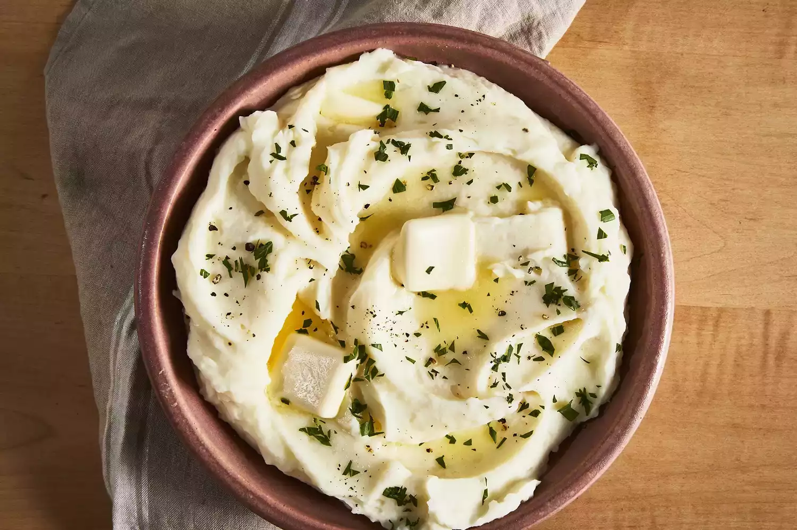

Mashed Potatoes

Description
This is basic recipe for mashed potatoes.
Ingredients
- Potatoes
- Garlic
- Milk
- Butter
- Salt
- Pepper
Steps
- Boil the potatoes and garlic in a pot of salted water, simmering until the potatoes are tender.
- Heat milk and butter in a saucepan until the butter is melted.
- Drain the potatoes, then add the warm milk mixture and mash with a potato masher.